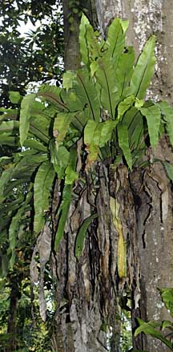
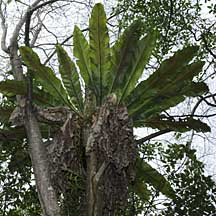
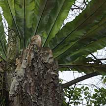
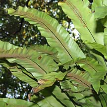
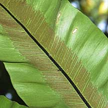
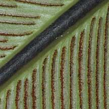
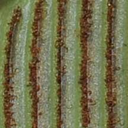

|
|
|
plants
text index | photo
index
|
| Birds'
nest fern Asplenium nidus Family Aspleniaceae updated Aug 09 Where seen? This huge rosette of large, fresh green fronds is commonly seen wedged in the branches of large trees, including roadside, forest and mangrove trees. These ferns are not parasites and do not suck any water or nutrients off the host tree. Features: The frond is fresh green, a broad and very long ribbon (50-150cm) with slightly wavy edges and a black central rib. The spores appear on the underside in fine lines. The fronds emerge in a rosette around a central stem which is usually not visible. Dead leaves collect in this 'nest' of fronds and are held firmly in place as new fronds emerge. Roots from the central stem grow into the dead leaves, further consolidating the decaying leaves into a huge spongy mass. This mass soaks up rainwater, while the ongoing decay releases nutrients. Thus the fern is self-sufficient in food and water even though it lives high up from the ground. As the older fronds die, they droop downwards forming a skirt of dry fronds under the younger, green fronds. Role in the habitat: The fern is such a rich source of water and nutrients, that often, other ferns and plants may grow on it. Sometimes, small bats may roost under the fern, chewing off some of the inner portions of the 'skirt' of dead leaves to create a cosy 'umbrella' for themselves. The Spotted Wood owl may also nest in this fern. Human uses: According to Wee, the leaves are used to ease labour pains by a tribe in Malaysia. The Malays use the leaves for a lotion to treat fever. |
 Growing on a mangrove tree. Admiralty Park, Jun 09 |
 Sungei Buloh Wetland Reserve, Sep 09  |
 Admiralty Park, Jun 09  |
 Pulau Ubin, Dec 09  |
|
References
|